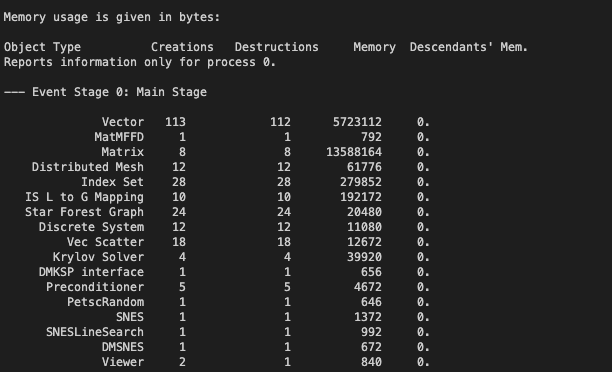

[TOC]
6. LaMEM Development Guide
In general, we try to follow much of the guidelines that PETSc has in place, even when we are somewhat less strict on some topics. Please have a look here, for more detailed info.
6.1 Integration branches
6.1.1 master
The master branch contains all features and bug fixes that are believed to be stable. New feature branches should start from master. Note that we do not have LaMEM release versions yet, but will introduce them once we find time to come up with a more decent documentation of LaMEM.
6.2 Adding new features to LaMEM using git
Most external users of LaMEM do not have writing access rights to LaMEM, to prevent mistakes from happening. Yet you can still contribute code in a rather straightforward manner, by using forking. An overall description of what forking does is given here. Below, we give specific instructions.
6.2.1. Fork LaMEM
What forking does is create a copy of LaMEM within your own GitHub account on which you can do your own work, create branches etc. (or also give other access if you wish). Once you are ready to push a local branch back to LaMEM master, you can create a pull request.
In order to fork, please follow the following steps:
- Login to your GitHub account and go from there to the LaMEM repository
https://github.com/UniMainzGeo/LaMEM - Click on the
Forkbutton in the toolbar. You can make this repo private or public. - Next, you clone LaMEM from your own repository to your local directory. The easiest way to do this is via the webpage where you go to
Cloneand copy the clone command. Next go to your terminal and type this
wheregit clone https://github.com/<username>/LaMEM.git ./LaMEM<username>should be your GitHub username (or copy the command from the web interface). - Change to the directory:
cd ./LaMEM - Link the open-source main version of LaMEM (also called upstream version) with your local copy of it by typing on the command-line
git remote add upstream https://github.com/UniMainzGeo/LaMEM.git - You can now always get the latest changes of the main version of LaMEM into your local copy by typing
git pull upstream master
6.2.1 Starting and working on a new feature
If you want to introduce a new feature to the code, you should always create a new branch for that.
The workflow is as follows:
Make sure you start from your local master by going to your local directory and typing
git checkout masterAlternatively, you can also push a button in the GUI (which is what we tend to do). Many of us use SourceTree which is provided by Atlassian.
Download the main changes of LaMEM into your own copy of the code
git pull upstream masterCreate and switch to a new feature branch:
git checkout -b <loginname>/<goal>-<short-description>here
goalshould be eitherbugfixorfeatureto clarify whether it is to fix a bug or to add a new feature to the code.For example, the new feature branch of Andrea on passive tracers should be called
git checkout -b andrea_piccolo/feature-passive_tracersUse all lowercase.
Write code
Inspect changes:
git statusor use one of the GUI's to do this
Regularly commit code:
- Commit all files changed:
git commit -aor - Commit selected files:
git commit file1 file2 file1or - Add new files to be committed:
git add file1 file2followed bygit commit. Modified files can be added to a commit in the same way. - The same can ofcourse be done through the GUI.
- It is important to do this frequently and add useful commit messages as
- Commit all files changed:
Push the feature branch from your local harddisk to your online bibucket account, such that others (with access) can see it:
git push -u origin andrea_piccolo/feature-passive_tracers
(or equivalently, git push --set-upstream origin andrea_piccolo/feature-passive_tracers). Note that this step will still be in your own fork of LaMEM, and not in the main version of LaMEM.s
- On a regular basis: merge
masterback into your feature or bugfix branch. This is easiest done with SourceTree. On a regular basis you should also pull the latest updates of the main LaMEM into your forked repository (step 2 above)
Once your branch is ready and you would like to push it back to the main version of LaMEM, you should create a Pull Request, as described below.
6.2.3 Switching between and handling branches
- Switch:
git checkout <branchname>, for examplegit checkout boris/feature-add_phase_transitions - Show local and remote-tracking branches:
git branch -a - Show available remotes:
git remote -v - Show all branches available on remote:
git ls-remote. Usegit remote show originfor a complete summary. - Delete local branch:
git branch -d <branchname>(only after merge to master is complete) - Delete remote branch:
git push origin :<branchname>(mind the colon in front of the branch name)
6.3 Contributing workflows
Note that LaMEM is an open source-code, and the GPL license states that changes you made to the code must be pushed back to LaMEM. We think this is fair, because we have spend a considerable amount of time developping it without having received specific funding to create an open-source community code. By pushing back your contributions to master other users can benefit from your additions. If the additions are part of a paper that you would like to be cited, feel free to add the reference in the source code. The LaMEM development team will make sure that things in master work and that tests will keep on running. By adding appropiate tests for your features it will also work in some time from now. Our experience shows that if you don't do this, or wait too long to push changes back to master, you will find that it becomes increasingly difficult to keep your branch in line with LaMEM/master.
6.3.1 Before filing a pull request
- If your contribution can be logically decomposed into 2 or more separate contributions, submit them in sequence with different branches instead of all at once. That makes it much easier to detect and resolve issues.
- Include tests which cover any changes to the source code. Create a new directory for these tests within
LaMEM/testsand add the test itself torunLaMEM_Tests.py. You will have to create a python file for each new test directory, and will have to add*.expectedfiles. Please make sure that these tests run reasonably fast, as it will otherwise significantly slow down the full testing framework (in most cases it is sufficient to have a low resolution case for testing). Tests can also involve python based plotting or postprocessing, or even running MATLAB to create a setup, but this is not a requirement. If you do plotting and postprocessing you need to make sure that these tests will also work on machines that do not have the python plotting packages installed. You can most likely get inspiration by looking at the existing examples. - Run the full test suite on your machine - i.e
make testin the/LaMEM/testsdirectory before a pull request. All tests should pass; if not ensure that. - Make sure that there are NO compiler warnings left if you compile a fresh version of LaMEM with
make mode=deb clean_all; make mode=deb all - Do the same on a different machine (e.g., linux, mac etc.) if it is available to you. Sometimes things work on one machine but not on the other.
- If your additions resulted in new input parameters to the input script, add these new options (with a brief explanation of their meaning) to the input master file
LaMEM/input_models/input/lamem_input.dat. Note that the nomenclature of the new parameters must be unique and case-independent. It is thus not allowed to call a paramaterK, since we already have thermal conductivityk. The reason for this is that new parameters are automatically part of the adjoint inversion framework which otherwise gets confused. New parameters should also have a clearly recognizable name (so everything related to your new plume inflow boundary condition should be called something likePlume_). Note that any new parameter in the input file can also automatically be called/overruled from the command line. - Merge the latest version of master back into your branch and make sure that all tests work (you may have to resolve conflicts; if you do his step regularly as suggested above it will in general be easier to keep your branch up-to-date).
- Make sure that you have no memory leaks. That means that every vector/matrix/dm you created should also be destroyed with VecDestroy, etc. In addition, if you happen to allocate memory yourself (with PetscMalloc) you must make sure that you free the memory again (using PetscFree). A simple way to check that you are fine with the PETSc internal objects is to run your testfile with
-log_viewat the end. This will give you a picture such as this one  The number of creations must be the same as the number of destructions. The only exception is the Viewer, as the log_view itself is also a viewer. If there is a mismatch, you likely forgot to do a Destroy somewhere. Note that it is more difficult to track downPetscMallocstatements without correspondingPetscFree. Doing that is important as otherwise the memory of a simulation will go up with every timestep, which ultimately makes the simulations run out of memory.
6.3.2 Filing a pull request
Once you are ready to push back your branch to the main version of LaMEM, you should create a pull request. Creating a pull request is best done through the GitHub web page:
- Go to your own GitHub account and the forked version of LaMEM.
- Select
brancheson the left side and select the branch. - On the right side you will have the option
Create Pull Request - Click on that, and select as destination on the right
UniMainzGeo/LaMEMandmaster - Create a title and a description of what the pull request is about
- Select Anton and Boris as reviewers
- And push
Create Pull Request - Boris and Anton will reveive an email and at least one of us has to approve the pull request. If you want others to look at it as well, add them at this stage. They will all receive an email if the PR is created and if changes are made to the PR.
- We will go over the code, test it ourselves, and in most cases make suggestions for changes. These can be incorporated into your branch by commiting changes in the usual manner.
- Once approved, it will be merged to
masterand your branch will be closed. The tests will ensure that the new features will keep working.